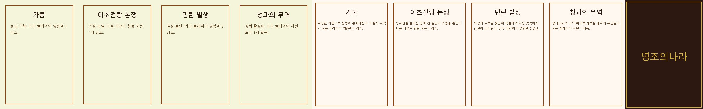
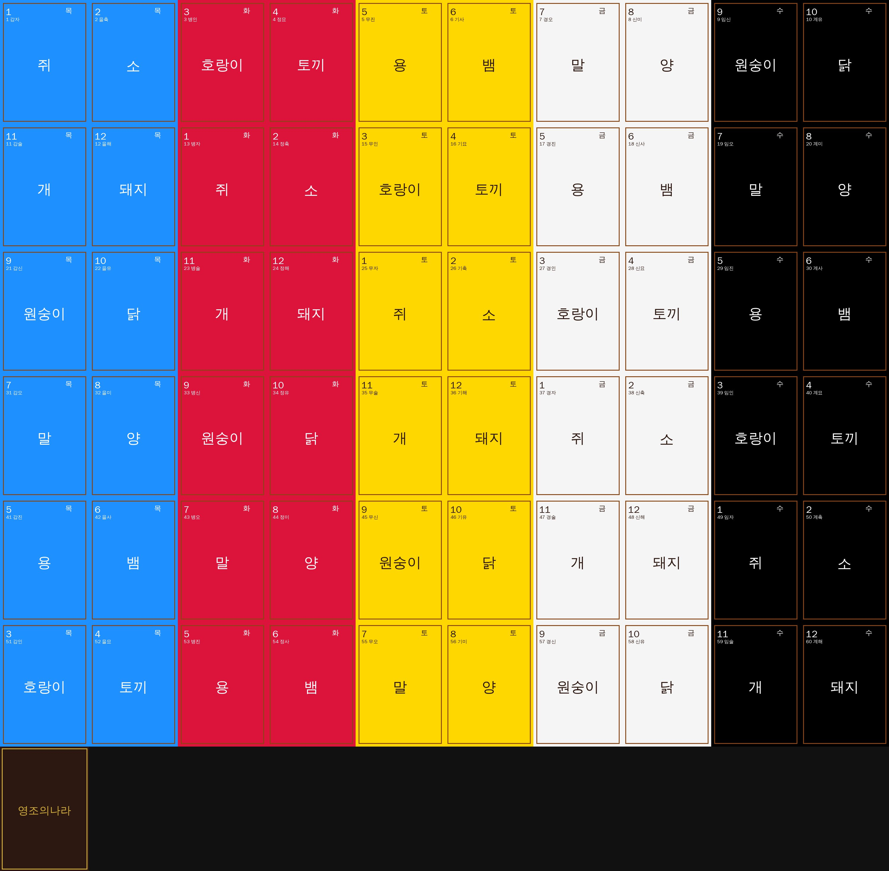
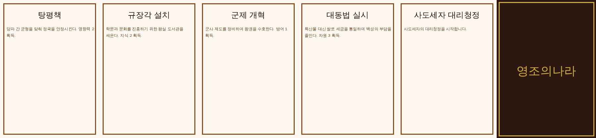
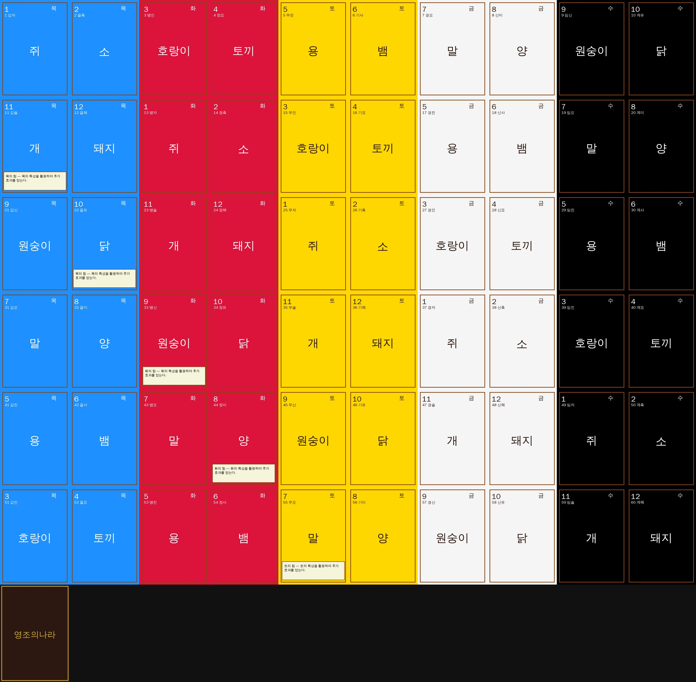
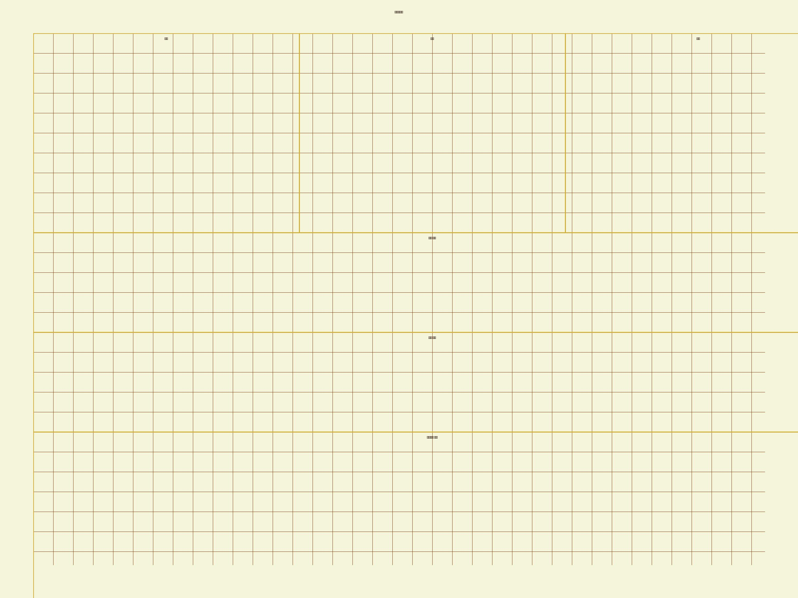
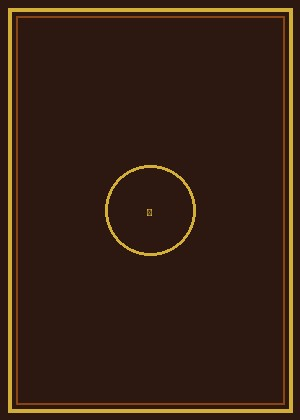

카드 시트 (Card Sheets)
event_cards
5×1 그리드 / 4장

noron_gapja
10×7 그리드 / 60장

policy_cards
6×1 그리드 / 5장

soron_gapja
10×7 그리드 / 60장

보드 (Board)
main_board
2400×1800px

카드 뒷면 (Card Back)
card_back
공용 뒷면

TTS 세이브 파일 (Save File)
아래 파일을 Tabletop Simulator 세이브 폴더에 복사하면
게임을 바로 불러올 수 있습니다.
~/Documents/My Games/Tabletop Simulator/Saves/